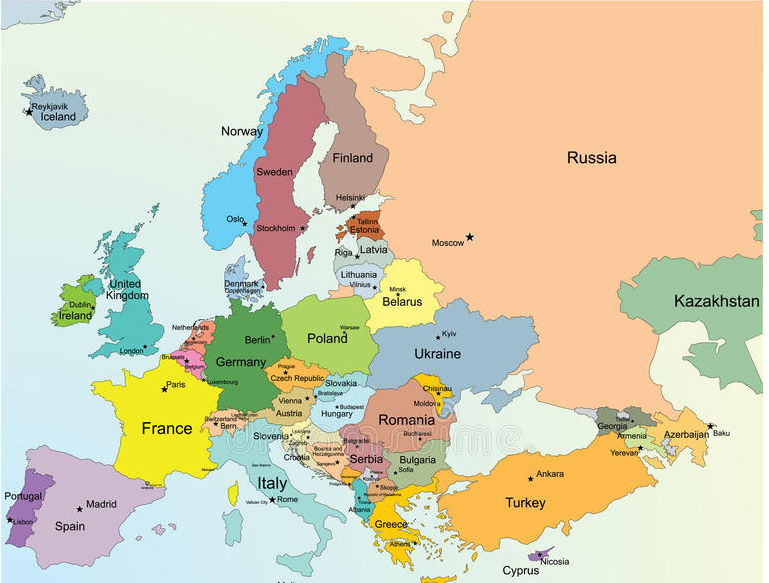

on peut varier les
tailles pour
les titres
gérer
les couleurs
,
l'épaisseur
,
l'italique
,
le soulignement
on rajoute à cela
surligner
ou même
barrer le texte.
diverses compétences d'affichage d'élèments :
liste ordonnées avec différent niveau:
élément 1
sous élément 1
sous élément 2
élément 2
sous élément 1
sous élément 2
élément 3
ect...
liste à puces
élément
élément
élément
élément
image avec zone cliquable :
ici la pologne, l'islande et l'estonie sont cliquable et renvoie à la page wikipedia du pays

Tables complexes avec fusion de colonnes et de lignes
avec changement de couleur de la case au survol de la souris
titre du tableau
titre
des colonnes
titre de lignes
A1
A2
B1
B2
...fin de la liste...
incorporation d'éléments dans la page
carte :
version google map dans le cadre
version openstreetmap dans une nouvel fenêtre
vidéo provenant de youtube :
élément mp3 :
Stomps And Claps (Percussion and Rhythm) - Alex_Kizenkov sur pixabay :
page réalisé par Melyna Queva